Los Altos Valles Calchaquíes en Salta se caracterizan por su altitud y suelos pobres en nutrientes. Este entorno extremo favorece el cultivo de variedades como Malbec, Torrontés y Cabernet Sauvignon, produciendo vinos únicos con acidez brillante, aromas intensos y gran expresión varietal.
La Rioja
Valle Aminga
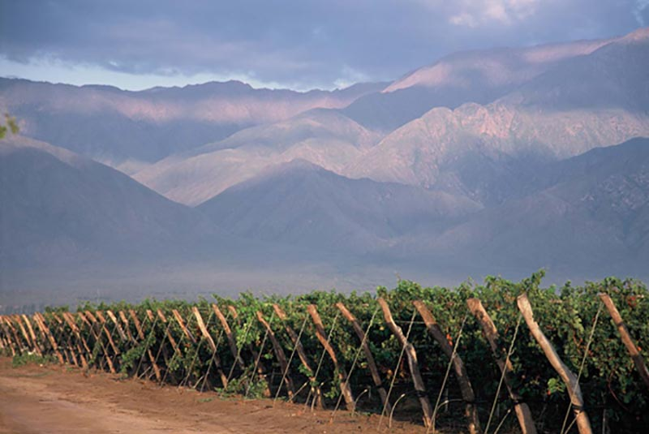
En el Valle de Aminga, en La Rioja, se cultivan uvas debido a su clima árido y condiciones ideales de altitud. Este valle ofrece beneficios únicos de suelo aluvial y gran amplitud térmica, que favorecen la maduración lenta de las uvas. Sus vinos se destacan por su estructura y notas frutales intensas, especialmente con variedades como Malbec y Torrontés.
Salta
Altos Valles Calchaquies
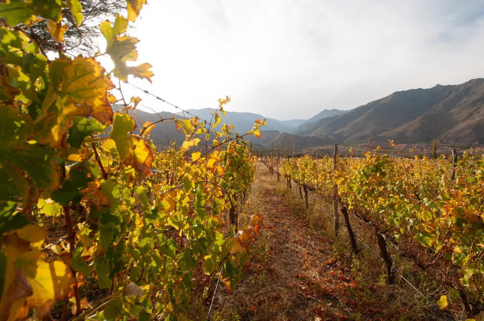
Cachi
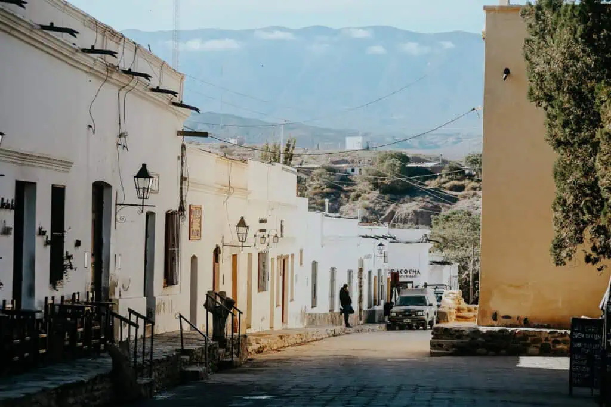
Cachi, dentro de los Altos Valles Calchaquíes, ofrece suelos calcáreos y clima árido. Aquí se cultivan principalmente Malbec y Torrontés, que se destacan por su frescura, acidez equilibrada y aromas florales, reflejando las características únicas del terroir de altura en Salta.
Patagonia
San Patricio de Chañar
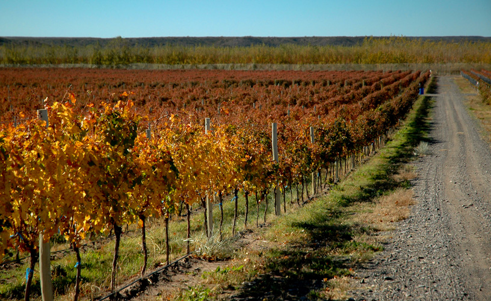
San Patricio del Chañar, en la Patagonia, se destaca por su clima semiárido y suelos pobres en nutrientes, ideales para el cultivo de uvas como Malbec, Merlot y Pinot Noir. Esta región ofrece vinos con buena estructura y acidez equilibrada, reflejando las condiciones extremas y la influencia del viento.
Valle de Chubut
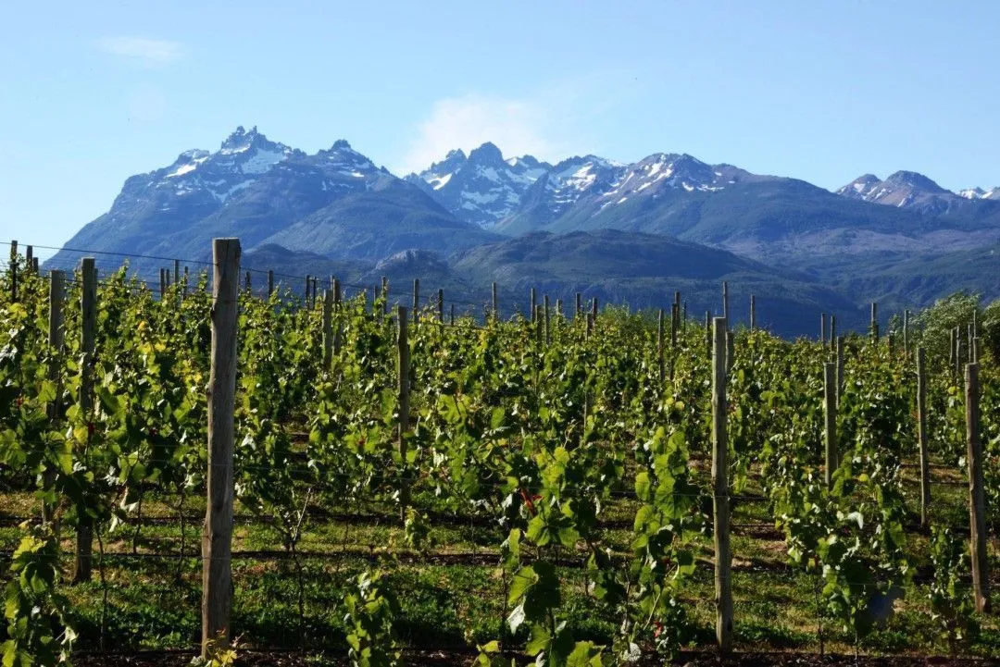
El Valle de Chubut, en la Patagonia, cuenta con suelos franco-arenosos y un clima fresco influenciado por el océano Atlántico. Aquí se cultivan variedades como Pinot Noir, Merlot y Sauvignon Blanc, produciendo vinos frescos con excelente acidez y notas de frutas maduras, característicos de la Patagonia.
San Juan
Valle Pedernal
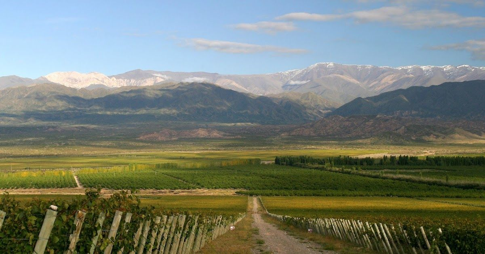
En San Juan, el Valle de Pedernal se destaca por sus suelos pedregosos y clima árido. Aquí se cultivan principalmente Syrah, Malbec y Cabernet Sauvignon, produciendo vinos con estructura sólida, taninos firmes y notas especiadas, reflejando la influencia de la alta altitud y el sol intenso.
San José
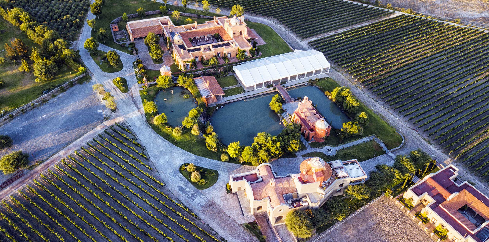
San José, en San Juan, ofrece suelos aluviales y un clima árido que favorece el cultivo de uvas como Bonarda, Syrah y Chardonnay. Sus vinos se caracterizan por su cuerpo medio, taninos suaves y notas frutales frescas, reflejando las condiciones únicas del Valle de Tulum en San Juan.
Córdoba
Valle de Calamuchita
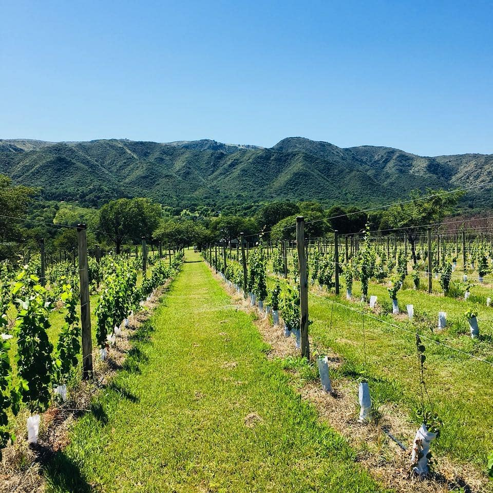
El Valle de Calamuchita en Córdoba es conocido por su clima templado y sus suelos arcillosos. Los vinos de esta región, como el Malbec y el Tempranillo, presentan un buen equilibrio entre frescura y estructura, ideales para disfrutar en su juventud.
Colonia Caroya
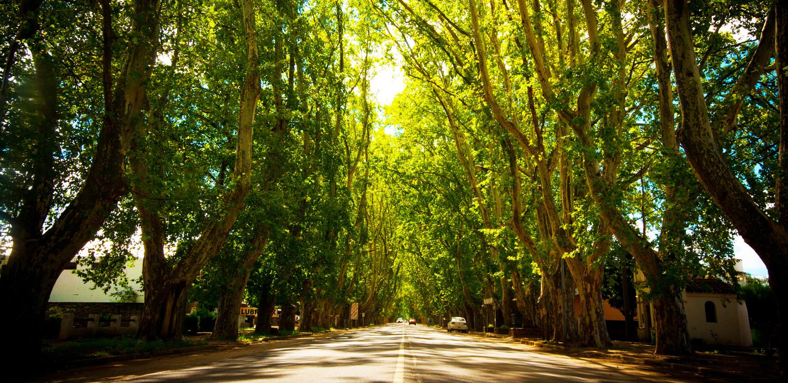
Colonia Caroya, en Córdoba, cuenta con suelos aluviales y un clima templado. Los vinos de Colonia Caroya, especialmente Malbec y Cabernet Sauvignon, tienen una buena concentración de sabores y taninos suaves, reflejando la tradición vitivinícola de la región.
Mendoza
Valle de Uco
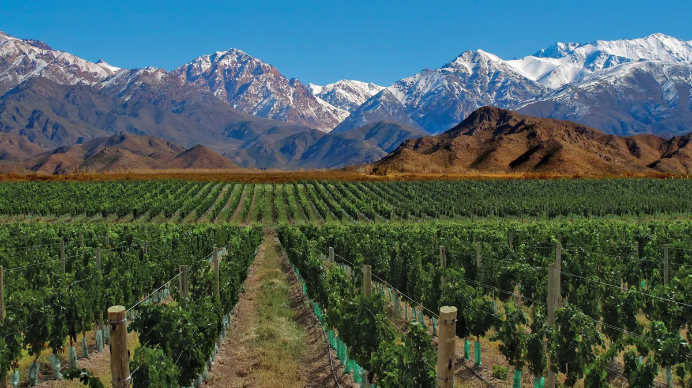
El Valle de Uco en Mendoza es conocido por su alta altitud y suelos pedregosos que favorecen el drenaje natural. Este entorno produce vinos con excelente concentración y acidez equilibrada. Las uvas más destacadas incluyen Malbec, Cabernet Sauvignon y Chardonnay, beneficiándose del clima semiárido y las noches frescas.
Los Chacayes
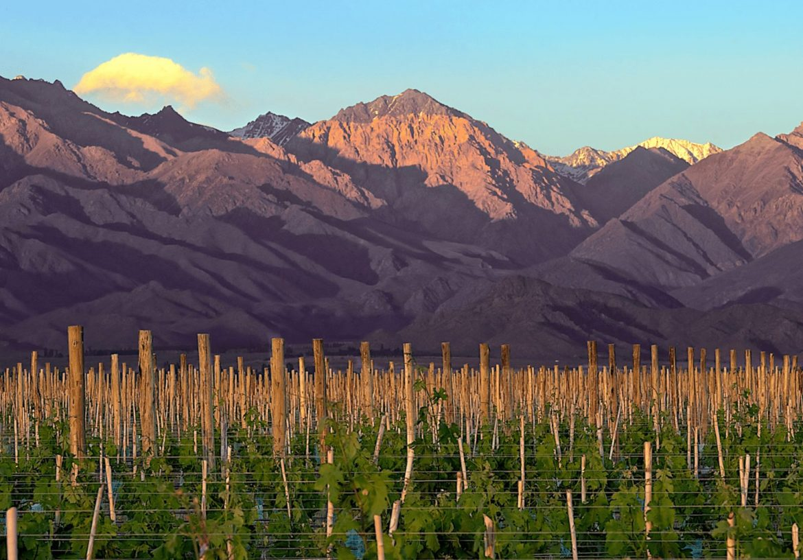
Dentro del Valle de Uco, Los Chacayes se destaca por sus suelos calcáreos y la influencia de los vientos patagónicos. Este área produce vinos con gran estructura y frescura, especialmente Malbec y Cabernet Sauvignon, apreciados por su equilibrio y elegancia.
Tunuyán
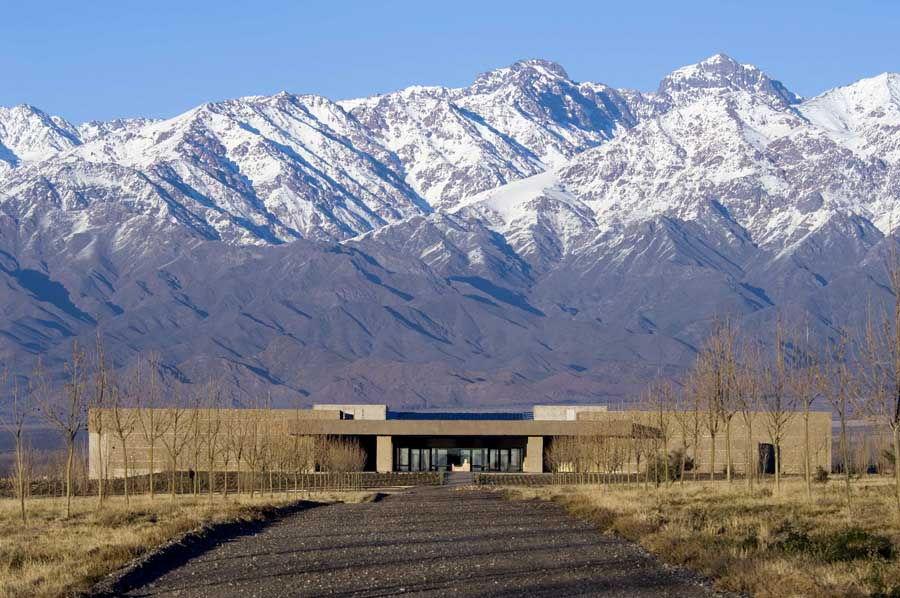
Tunuyán, ubicado en el corazón del Valle de Uco, ofrece suelos profundos y bien drenados. Las uvas cultivadas aquí, como Malbec y Merlot, se benefician de la amplitud térmica, resultando en vinos con aromas complejos y una acidez vibrante.
La Consulta
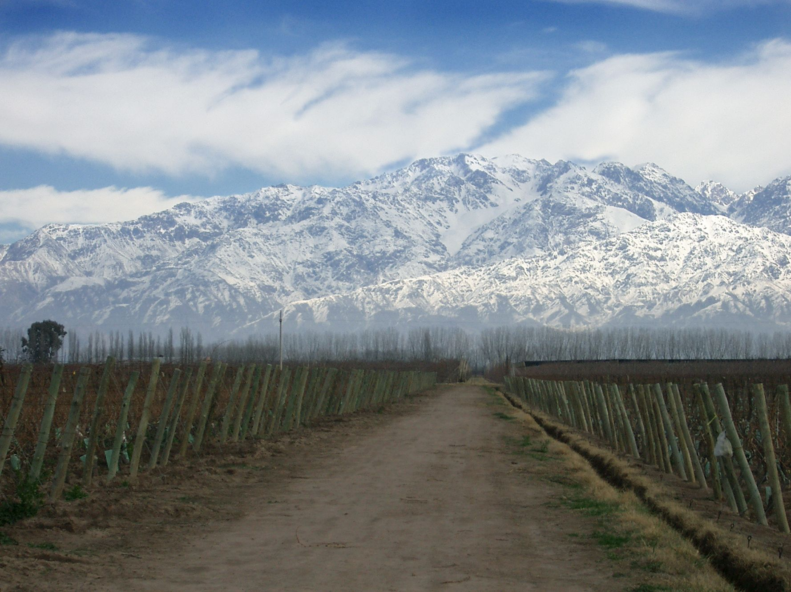
La Consulta, en el Valle de Uco, es conocida por su clima fresco y suelos rocosos. Los vinos producidos aquí, como Malbec y Cabernet Sauvignon, se caracterizan por su intensidad y complejidad, con notas de frutas rojas y especias.
Tupungato
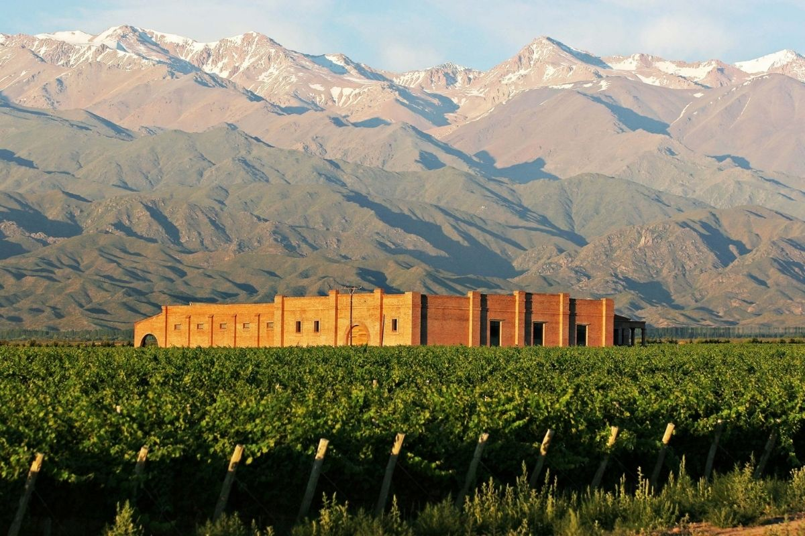
Tupungato es una región del Valle de Uco que se destaca por sus altitudes extremas y sus suelos diversos. Los vinos de esta área, como el Malbec y el Chardonnay, presentan una notable frescura y mineralidad, resultado del clima de montaña y el suelo calcáreo.
Agrelo
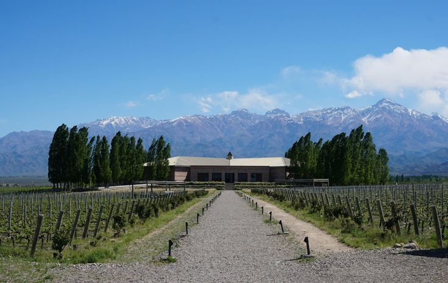
Agrelo, en Mendoza, es conocida por sus suelos aluviales y su clima cálido. Los vinos de Agrelo, especialmente Malbec y Cabernet Sauvignon, tienen una gran concentración de sabor y una textura suave, debido a la rica historia vitivinícola de la región.
Luján de Cuyo
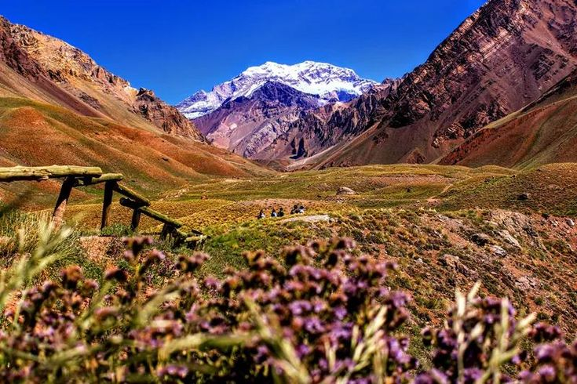
Luján de Cuyo es famosa por su tradición vinícola y sus suelos aluviales. Los vinos producidos aquí, como el Malbec, son conocidos por su cuerpo robusto y sus sabores intensos, beneficiados por el clima seco y las técnicas vitivinícolas avanzadas.
San Rafael
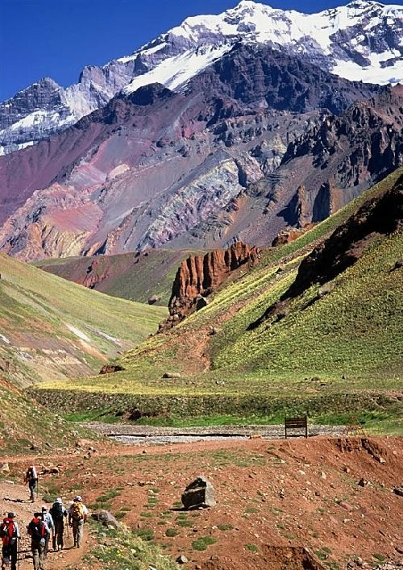
San Rafael, en Mendoza, cuenta con un clima cálido y suelos variados que favorecen el cultivo de diversas variedades de uvas. Los vinos de San Rafael, como el Malbec y el Syrah, presentan una estructura sólida y notas frutales maduras.
Ugarteche
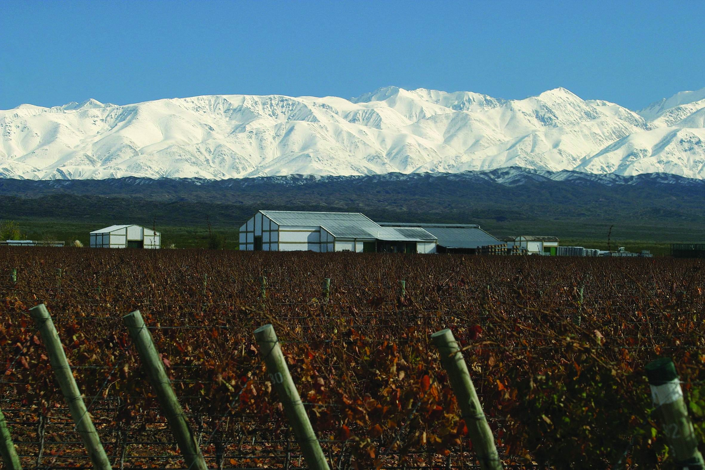
Ugarteche, en Mendoza, es conocida por sus suelos pedregosos y su clima cálido. Los vinos producidos aquí, como el Malbec y el Tempranillo, se caracterizan por su complejidad y riqueza de sabores, gracias a las condiciones óptimas para la viticultura.
Valle de Canota
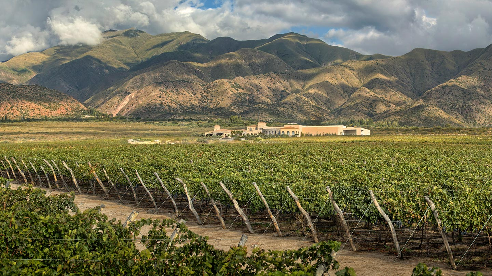
El Valle de Canota, en Mendoza, se distingue por su suelo rocoso y su clima seco. Los vinos de esta región, como el Malbec y el Cabernet Sauvignon, ofrecen una gran concentración y profundidad, apreciados por su elegancia y carácter.